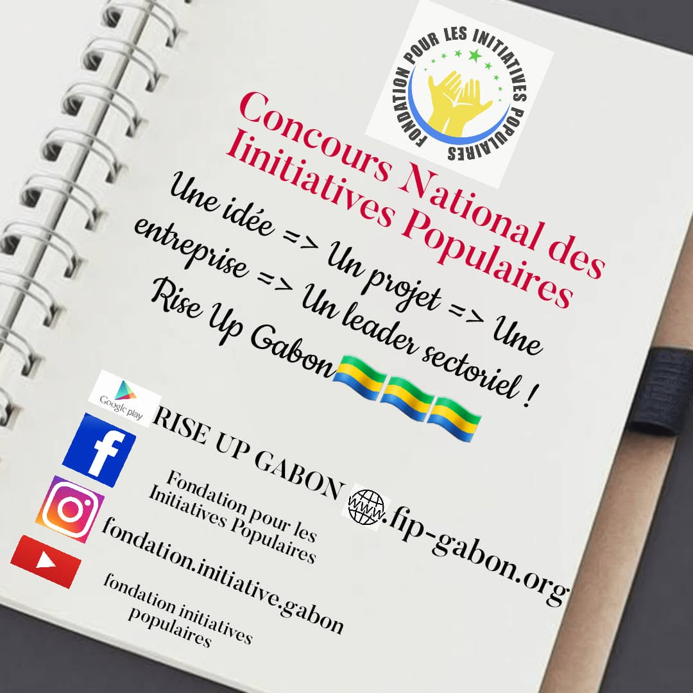

Concours national
Concours National des Initiatives Populaires
- Une idée
- Un projet
- Une entreprise
- Un leader sectoriel
La FIP part à la recherche des initiatives qui feront l'économie gabonaise de demain. Le concours accompagne les candidats de l'idée jusqu'à l'entreprise, avec un mot d'ordre : Rise Up Gabon.
Les candidatures passent par l'application Rise Up Gabon, disponible sur Google Play.